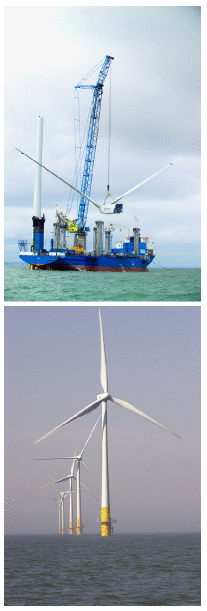
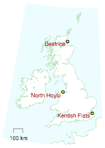
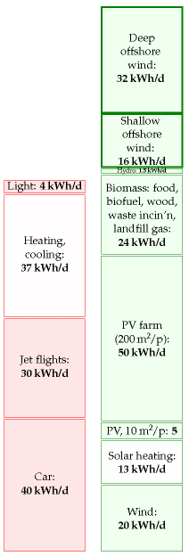
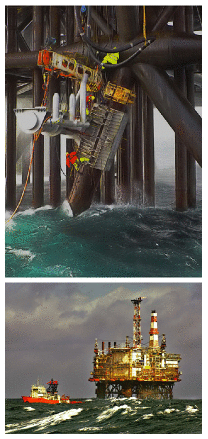
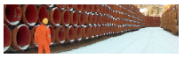
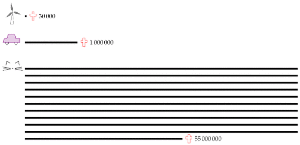
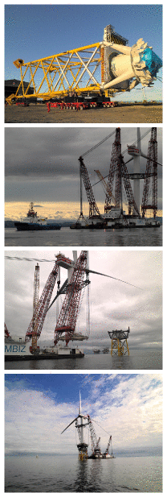
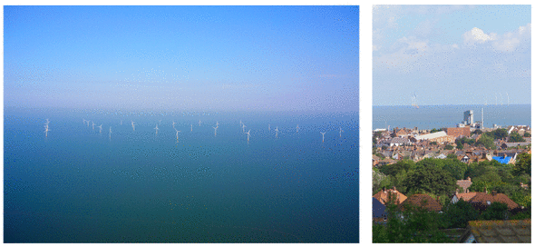

10 Offshore wind

Figure 10.1. Kentish Flats – a shallow offshore wind farm. Each rotor has a diameter of 90 m centred on a hub height of 70 m. Each “3 MW” turbine weighs 500 tons, half of which is its foundation. Photos © Elsam (elsam.com). Used with permission.
The London Array offshore wind farm will make a crucial contribution to the UK’s renewable energy targets.
James Smith, chairman of Shell UK
Electric power is too vital a commodity to be used as a job-creation programme for the wind turbine industry.
David J. White
At sea, winds are stronger and steadier than on land, so offshore wind farms deliver a higher power per unit area than onshore wind farms. The Kentish Flats wind farm in the Thames Estuary, about 8.5 km offshore from Whitstable and Herne Bay, which started operation at the end of 2005, was predicted to have an average power per unit area of 3.2 W/m2. In 2006, its average power per unit area was 2.6 W/m2. 1
I’ll assume that a power per unit area of 3 W/m2 (50% larger than our onshore estimate of 2 W/m2) is an appropriate figure for offshore wind farms around the UK.
We now need an estimate of the area of sea that could plausibly be covered with wind turbines. It is conventional to distinguish between shallow offshore wind and deep offshore wind, as illustrated in figure 10.2. Conventional wisdom seems to be that shallow offshore wind (depth less than 25– 30 m), while roughly twice as costly as land-based wind, is economically feasible, given modest subsidy; 2 and deep offshore wind is at present not economically feasible. 3 As of 2008, there’s just one deep offshore windfarm in UK waters, an experimental prototype sending all its electricity to a nearby oilrig called Beatrice.
Shallow offshore
Within British territorial waters, the shallow area is about 40 000 km2, most of it off the coast of England and Wales. This area is about two Waleses.
The average power available from shallow offshore wind farms occupying the whole of this area would be 120 GW, or 48 kWh/d per person. But it’s hard to imagine this arrangement being satisfactory for shipping. Substantial chunks of this shallow water would, I’m sure, remain off-limits for wind farms. The requirement for shipping corridors and fishing areas must reduce the plausibly-available area; I propose that we assume the available fraction is one third (but please see this chapter’s end-notes for a more pessimistic view! 4). So we estimate the maximum plausible power from shallow offshore wind to be 16 kWh/d per person.
Before moving on, I want to emphasize the large area – two thirds of a Wales – that would be required to deliver this 16 kWh/d per person.
(Figure omitted from this edition: third-party rights.)
Figure 10.2. UK territorial waters with depth less than 25 m (yellow) and depth between 25 m and 50 m (purple). Data from DTI Atlas of Renewable Marine Resources. © Crown copyright.
If we take the total coastline of Britain (length: 3000 km), and put a strip of turbines 4 km wide all the way round, that strip would have an area of 13 000 km2. 5 That is the area we must fill with turbines to deliver 16 kWh/d per person. To put it another way, consider the number of turbines required. 16 kWh/d per person would be delivered by 44 000 “3 MW” turbines, which works out to 15 per kilometre of coastline, if they were evenly spaced around 3000 km of coast.

Offshore wind is tough to pull off because of the corrosive effects of sea water. At the big Danish wind farm, Horns Reef, all 80 turbines had to be dismantled and repaired after only 18 months’ exposure to the sea air. 6 The Kentish Flats turbines seem to be having similar problems with their gearboxes, one third needing replacement during the first 18 months.
Deep offshore
The area with depths between 25 m and 50 m is about 80 000 km2 – the size of Scotland. Assuming again a power per unit area of 3 W/m2, “deep” offshore wind farms could deliver another 240 GW, or 96 kWh/d per person, if turbines completely filled this area. Again, we must make corridors for shipping. I suggest as before that we assume we can use one third of the area for wind farms; this area would then be about 30% bigger than Wales, and much of it would be further than 50 km offshore. The outcome: if an area equal to a 9 km-wide strip all round the coast were filled with turbines, deep offshore wind could deliver a power of 32 kWh/d per person. A huge amount of power, yes; but still no match for our huge consumption. And we haven’t spoken about the issue of wind’s intermittency. We’ll come back to that in Chapter 26.

Figure 10.3. Offshore wind.
I’ll include this potential deep offshore contribution in the production stack, with the proviso, as I said before, that wind experts reckon deep offshore wind is prohibitively expensive.

Figure 10.4. The Magnus platform in the northern UK sector of the North Sea contains 71 000 tons of steel. In the year 2000 this platform delivered 3.8 million tons of oil and gas – a power of 5 GW. The platform cost £1.1 billion. Photos by Terry Cavner.
Some comparisons and costs
So, how’s our race between consumption and production coming along? Adding both shallow and deep offshore wind to the production stack, the green stack has a lead. Something I’d like you to notice about this race, though, is this contrast: how easy it is to toss a bigger log on the consumption fire, and how difficult it is to grow the production stack. As I write this paragraph, I’m feeling a little cold, so I step over to my thermostat and turn it up. It’s so simple for me to consume an extra 30 kWh per day. But squeezing an extra 30 kWh per day per person from renewables requires an industrialization of the environment so large it is hard to imagine.
To create 48 kWh per day of offshore wind per person in the UK would require 60 million tons of concrete and steel – one ton per person. Annual world steel production is about 1200 million tons, which is 0.2 tons per person in the world. During the second world war, American shipyards built 2751 Liberty ships, 7 each containing 7000 tons of steel – that’s a total of 19 million tons of steel, or 0.1 tons per American. So the building of 60 million tons of wind turbines is not off the scale of achievability; but don’t kid yourself into thinking that it’s easy. Making this many windmills is as big a feat as building the Liberty ships.
For comparison, to make 48 kWh per day of nuclear power per person in the UK would require 8 million tons of steel and 140 million tons of concrete. We can also compare the 60 million tons of offshore wind hardware that we’re trying to imagine with the existing fossil-fuel hardware already sitting in and around the North Sea (figure 10.4). In 1997, 200 installations and 7000 km of pipelines in the UK waters of the North Sea contained 8 million tons of steel and concrete. 8 The newly built Langeled gas pipeline from Norway to Britain, which will convey gas with a power of 25 GW (10 kWh/d/p), used another 1 million tons of steel and 1 million tons of concrete (figure 10.5).

Figure 10.5. Pipes for Langeled. From Bredero–Shaw [brederoshaw.com].
The UK government announced on 10th December 2007 9 that it would permit the creation of 33 GW of offshore wind capacity (which would deliver on average 10 GW to the UK, or 4.4 kWh per day per person), a plan branded “pie in the sky” 10 by some in the wind industry. Let’s run with a round figure of 4 kWh per day per person. This is one quarter of my shallow 16 kWh per day per person. To obtain this average power requires roughly 10 000 “3 MW” wind turbines like those in figure 10.1. (They have a capacity of “3 MW” but on average they deliver 1 MW. I pop quotes round “3 MW” to indicate that this is a capacity, a peak power.)
What would this “33 GW”’ of power cost to erect? 11 Well, the “90 MW” Kentish Flats farm cost £105 million, so “33 GW” would cost about £33 billion. One way to clarify this £33 billion cost of offshore wind delivering 4 kWh/d per person is to share it among the UK population; that comes out to £550 per person. This is a much better deal, incidentally, than microturbines. A roof-mounted microturbine currently costs about £1500 and, even at a very optimistic windspeed of 6 m/s, delivers only 1.6 kWh/d. In reality, in a typical urban location in England, such micro-turbines deliver 0.2 kWh per day. 12
Another bottleneck constraining the planting of wind turbines is the special ships required. To erect 10 000 wind turbines (“33 GW”) over a period of 10 years would require roughly 50 jack-up barges. These cost £60 million each, 13 so an extra capital investment of £3 billion would be required. Not a show-stopper compared with the £33bn price tag already quoted, but the need for jack-up barges is certainly a detail that requires some forward planning.
Costs to birds
Do windmills kill “huge numbers” of birds? Wind farms recently got adverse publicity from Norway, where the wind turbines on Smola, a set of islands off the north-west coast, killed 9 white-tailed eagles in 10 months. I share the concern of BirdLife International for the welfare of rare birds. But I think, as always, it’s important to do the numbers. It’s been estimated that 30 000 birds per year are killed by wind turbines in Denmark, where windmills generate 19% of the electricity. Horror! Ban windmills! We also learn, moreover, that traffic kills one million birds per year in Denmark. Thirty-times-greater horror! Thirty-times-greater incentive to ban cars! And in Britain, 55 million birds per year are killed by cats (figure 10.6).
Going on emotions alone, I would like to live in a country with virtually no cars, virtually no windmills, and with plenty of cats and birds (with the cats that prey on birds perhaps being preyed upon by Norwegian whitetailed eagles, to even things up). But what I really hope is that decisions about cars and windmills are made by careful rational thought, not by emotions alone. Maybe we do need the windmills!

Figure 10.6. Birds lost in action. Annual bird deaths in Denmark caused by wind turbines and cars, and annual bird deaths in Britain caused by cats. Numbers from Lomborg (2001). Collisions with windows kill a similar number to cats.
Eighteen years of offshore wind
A section added in the 2026 revision. This chapter contains a dated prediction, which makes it easy to mark.
The plan, and what was built
MacKay records the government’s announcement of 10 December 2007 that it would permit 33 GW of offshore wind capacity, delivering about 4.4 kWh/d per person — a plan the wind industry itself branded “pie in the sky”.
At the end of 2025 the United Kingdom had 17.0 GW of offshore wind: roughly half the plan, eighteen years later. It generated 52 TWh in 2025, 17.9% of British electricity, against 48.8 TWh the year before. Per person that is 2.1 kWh/d.14
So the derided plan was neither achieved nor absurd. It is about half built and still building. But set it against this chapter’s own ceilings and the scale becomes clear: 2.1 kWh/d against a shallow-water potential of 16 and a total offshore potential of 48. Britain has built something like an eighth of the shallow resource MacKay sized, and one twenty-third of the whole.
He was right about the area and wrong about the price
His costing was £33 billion for 33 GW, which is about £1000 per kilowatt. Fixed-bottom offshore wind now costs roughly $3500 to $6500 per kilowatt — call it £2800 to £5200 — so the real figure is three to five times his estimate.15
That is worth putting beside chapter 6. There MacKay was wrong about cost in the other direction, and by a larger factor: solar electricity is roughly a tenth of what he assumed, while offshore wind is three to five times more. The book brackets cost out deliberately and says so; the interesting thing is that when cost did move, it moved unpredictably in both directions and by more than an order of magnitude between the two technologies. Nothing in the physics told you which.
The proviso about deep water was right
He put deep offshore on the production stack “with the proviso, as I said before, that wind experts reckon deep offshore wind is prohibitively expensive”. Floating wind has since stopped being hypothetical: Scotland hosts Hywind Scotland and Kincardine, the latter the world’s largest floating farm with five 9.5 MW turbines and one of 2 MW, fully operational since 2021.
But floating capex runs $6000 to $10 000 per kilowatt, roughly £4700 to £7900, roughly double fixed-bottom. So deep offshore is no longer impossible and is not yet cheap, and his 32 kWh/d entry on the stack remains, eighteen years on, almost entirely unbuilt. The proviso has aged better than the estimate.
Britain invented it; China owns it
The other change is one MacKay could not have anticipated, because in 2008 offshore wind was essentially a British and Danish undertaking.
| End of 2025 | Offshore wind, GW |
|---|---|
| China | 47.4 |
| United Kingdom | 17.0 |
| Germany | 9.7 |
| Netherlands | 4.8 |
| Taiwan | 3.6 |
| World | 91.4 |
Britain still has the largest offshore fleet outside China and the largest in Europe. China has nearly three times as much, and more than half the world’s total. The industry that this chapter describes as a British frontier is now mostly somewhere else.
One thing that improved more than he expected
MacKay’s turbines have “a capacity of 3 MW but on average they deliver 1 MW” — a load factor of 33%. British offshore projects are now planned around 43%, and the newest sites do considerably better, as chapter 4 records for Dogger Bank. The machines also stopped falling apart: this chapter’s account of Horns Reef, where all eighty turbines were dismantled after eighteen months, and of Kentish Flats replacing a third of its gearboxes in the same period, describes an industry in its infancy that no longer exists.
None of that changes the area. Chapter 4’s section on larger turbines explains why: power per unit area is set by spacing, not by the machine. What the higher load factor buys is more energy from the same 17 GW, not more energy from the same sea.
Notes and further reading
| Region | depth 5 to 30 m: area (km2) | depth 5 to 30 m: potential resource (kWh/d/p) | deeper water: area (km2) | deeper water: potential resource (kWh/d/p) |
|---|---|---|---|---|
| North West | 3300 | 6 | 2000 | 4 |
| Greater Wash | 7400 | 14 | 950 | 2 |
| Thames Estuary | 2100 | 4 | 850 | 2 |
| Other | 14000 | 28 | 45000 | 87 |
| TOTAL | 27000 | 52 | 49000 | 94 |
Table 10.7. Potential offshore wind generation resource in proposed strategic regions, if these regions were entirely filled with wind turbines. From Dept. of Trade and Industry (2002b).
It’s possible that floating wind turbines may change the economics of deep offshore wind.
When it is in working order, Horns Reef’s load factor is 0.43 and its average power per unit area is 2.6 W/m2.

Figure 10.8. Construction of the Beatrice demonstrator deep offshore windfarm. Photos kindly provided by Talisman Energy (UK) Limited.

Figure 10.9. Kentish Flats. Photos © Elsam (elsam.com). Used with permission.
Further reading: UK wind energy database [www.bwea.com/ukwed/].
The Kentish Flats wind farm in the Thames Estuary… See www.kentishflats.co.uk. Its 30 Vestas V90 wind turbines have a total peak output of 90 MW, and the predicted average output was 32 MW (assuming a load factor of 36%). The mean wind speed at the hub height is 8.7 m/s. The turbines stand in 5 m-deep water, are spaced 700 m apart, and occupy an area of 10 km2. The power density of this offshore wind farm was thus predicted to be 3.2 W/m2. In fact, the average output was 26 MW, so the average load factor in 2006 was 29% [wbd8o]. This works out to a power density of 2.6 W/m2. The North Hoyle wind farm off Prestatyn, North Wales, had a higher load factor of 36% in 2006. Its thirty 2 MW turbines occupy 8.4 km2. They thus had an average power density of 2.6 W/m2.↩︎
…shallow offshore wind, while roughly twice as costly as onshore wind, is economically feasible, given modest subsidy. Source: Danish wind association windpower.org.↩︎
…deep offshore wind is at present not economically feasible. Source: BritishWind Energy Association briefing document, September 2005, www.bwea.com. Nevertheless, a deep offshore demonstration project in 2007 put two turbines adjacent to the Beatrice oil field, 22 km off the east coast of Scotland (figure 10.8). Each turbine has a “capacity” of 5 MW and sits in a water depth of 45 m. Hub height: 107 m; diameter 126 m. All the electricity generated will be used by the oil platforms. Isn’t that special! The 10 MW project cost £30 million – this price-tag of £3 per watt (peak) can be compared with that of Kentish Flats, £1.2 per watt (£105 million for 90 MW). www.beatricewind.co.uk↩︎
The area available for offshore wind. The Department of Trade and Industry’s (2002) document “Future Offshore” gives a detailed breakdown of areas that are useful for offshore wind power. Table 10.7 shows the estimated resource in 76 000 km2 of shallow and deep water. The DTI’s estimated power contribution, if these areas were entirely filled with windmills, is 146 kWh/d per person (consisting of 52 kWh/d/p from the shallow and 94 kWh/d/p from the deep). But the DTI’s estimate of the potential offshore wind generation resource is just 4.6 kWh per day per person. It might be interesting to describe how they get down from this potential resource of 146 kWh/d per person to 4.6 kWh/d per person. Why a final figure so much lower than ours? First, they imposed these limits: the water must be within 30 km of the shore and less than 40 m deep; the sea bed must not have gradient greater than 5°; shipping lanes, military zones, pipelines, fishing grounds, and wildlife reserves are excluded. Second, they assumed that only 5% of potential sites will be developed (as a result of seabed composition or planning constraints); they reduced the capacity by 50% for all sites less than 10 miles from shore, for reasons of public acceptability; they further reduced the capacity of sites with wind speed over 9 m/s by 95% to account for “development barriers presented by the hostile environment;” and other sites with average wind speed 8–9 m/s had their capacities reduced by 5%.↩︎
…if we take the total coastline of Britain (length: 3000 km), and put a strip of turbines 4 km wide all the way round… Pedants will say that “the coastline of Britain is not a well-defined length, because the coast is a fractal.” Yes, yes, it’s a fractal. But, dear pedant, please take a map and put a strip of turbines 4 km wide around mainland Britain, and see if it’s not the case that your strip is indeed about 3000 km long.↩︎
Horns Reef (Horns Rev). The difficulties with this “160 MW” Danish wind farm off Jutland [www.hornsrev.dk] are described by Halkema (2006).↩︎
Liberty ships – www.liberty-ship.com/html/yards/introduction.html↩︎
…fossil fuel installations in the North Sea contained 8 million tons of steel and concrete – Rice and Owen (1999).↩︎
The UK government announced on 10th December 2007 that it would permit the creation of 33 GW of offshore capacity… [25e59w].↩︎
What would “33 GW” of offshore wind cost? According to the DTI in November 2002, electricity from offshore wind farms costs about £50 per MWh (5p per kWh) (Dept. of Trade and Industry, 2002b, p21). Economic facts vary, however, and in April 2007 the estimated cost of offshore was up to £92 per MWh (Dept. of Trade and Industry, 2007, p7). By April 2008, the price of offshore wind evidently went even higher: Shell pulled out of their commitment to build the London Array. It’s because offshore wind is so expensive that the Government is having to increase the number of ROCs (renewable obligation certificates) per unit of offshore wind energy. The ROC is the unit of subsidy given out to certain forms of renewable electricity generation. The standard value of a ROC is £45, with 1 ROC per MWh; so with a wholesale price of roughly £40/MWh, renewable generators are getting paid £85 per MWh. So 1 ROC per MWh is not enough subsidy to cover the cost of £92 per MWh. In the same document, estimates for other renewables (medium levelized costs in 2010) are as follows. Onshore wind: £65–89/MWh; co-firing of biomass: £53/MWh; large-scale hydro: £63/MWh; sewage gas: £38/MWh; solar PV: £571/MWh; wave: £196/MWh; tide: £177/MWh. “Dale Vince, chief executive of green energy provider Ecotricity, which is engaged in building onshore wind farms, said that he supported the Government’s [offshore wind] plans, but only if they are not to the detriment of onshore wind. ‘It’s dangerous to overlook the fantastic resource we have in this country. . . By our estimates, it will cost somewhere in the region of £40bn to build the 33 GW of offshore power Hutton is proposing. We could do the same job onshore for £20bn’.” [57984r]↩︎
In a typical urban location in England, microturbines deliver 0.2 kWh per day. Source: Third Interim Report, www.warwickwindtrials.org.uk/2.html. Among the best results in the Warwick Wind Trials study is a Windsave WS1000 (a 1-kW machine) in Daventry mounted at a height of 15 m above the ground, generating 0.6 kWh/d on average. But some microturbines deliver only 0.05 kWh per day – Source: Donnachadh McCarthy: “My carbonfree year,” The Independent, December 2007 [6oc3ja]. The Windsave WS1000 wind turbine, sold across England in B&Q’s shops, won an Eco-Bollocks award from Housebuilder’s Bible author Mark Brinkley: “Come on, it’s time to admit that the roof-mounted wind turbine industry is a complete fiasco. Good money is being thrown at an invention that doesn’t work. This is the Sinclair C5 of the Noughties.” [5soql2]. The Met Office and Carbon Trust published a report in July 2008 [6g2jm5], which estimates that, if small-scale turbines were installed at all houses where economical in the UK, they would generate in total roughly 0.7 kWh/d/p. They advise that roof-mounted turbines in towns are usually worse than useless: “in many urban situations, roof-mounted turbines may not pay back the carbon emitted during their production, installation and operation.”↩︎
Jack-up barges cost £60 million each. Source: news.bbc.co.uk/1/hi/magazine/7206780.stm. I estimated that we would need roughly 50 of them by assuming that there would be 60 workfriendly days each year, and that erecting a turbine would take 3 days.↩︎
Offshore wind capacity at end-2025 from the Energy Institute’s Statistical Review of World Energy 2026: United Kingdom 16 960 MW, China 47 390 MW, Germany 9673 MW, Netherlands 4750 MW, Taiwan 3590 MW, world total 91 380 MW. Generation of 52 TWh in 2025 and 48.8 TWh in 2024, being 17.9% and 17.0% of British electricity, is from the Department for Energy Security and Net Zero’s Energy Trends. The per-person figure uses a population of 68.4 million. Note that capacity is measured at year end while generation accrues through the year, so dividing one by the other understates the achieved load factor.↩︎
MacKay’s £33 billion for 33 GW is his own figure, scaled from the £105 million cost of the 90 MW Kentish Flats farm, and works out at about £1000/kW. Current capital cost ranges are commercial estimates: roughly $3500–6500/kW for fixed-bottom projects, with European sites on mature ground at the lower end, and $6000–10 000/kW for floating at early-commercial scale. These are not inflation-adjusted against his 2008 figure, and about half the nominal increase is general price inflation over eighteen years; the real increase is smaller but still large, and runs opposite to the direction almost everyone expected in 2008. Chapter 4’s section on what wind now earns gives the revenue side of the same squeeze.↩︎